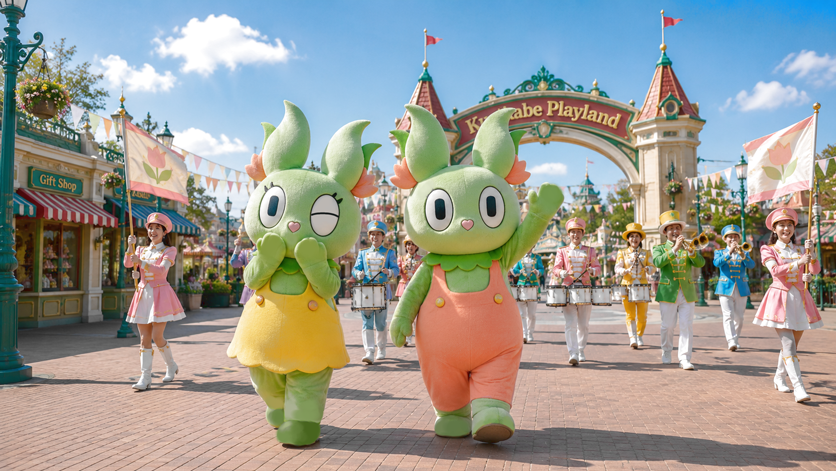

くさぴょんといっしょ！パレード

園内を練り歩くパレード。 くさぴょんや仲間たちが登場し、音楽に合わせてダンスを披露します。 お子さまも一緒に参加できる時間もあり、思い出に残る体験ができます。
特徴
- 所要時間：約30分
- 開催時間：毎日11:00～、15:00～（季節や天候により変更あり）
おすすめポイント
くさぴょんと仲間たちのかわいい衣装や、華やかなフロートが見どころです。 写真撮影も可能で、家族や友人との思い出作りに最適です。

園内を練り歩くパレード。 くさぴょんや仲間たちが登場し、音楽に合わせてダンスを披露します。 お子さまも一緒に参加できる時間もあり、思い出に残る体験ができます。
くさぴょんと仲間たちのかわいい衣装や、華やかなフロートが見どころです。 写真撮影も可能で、家族や友人との思い出作りに最適です。